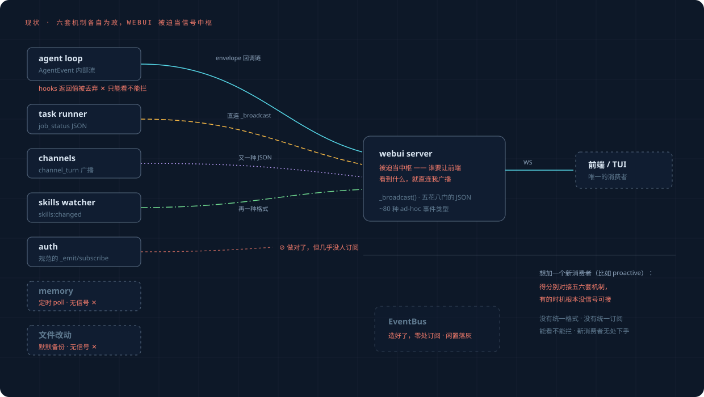
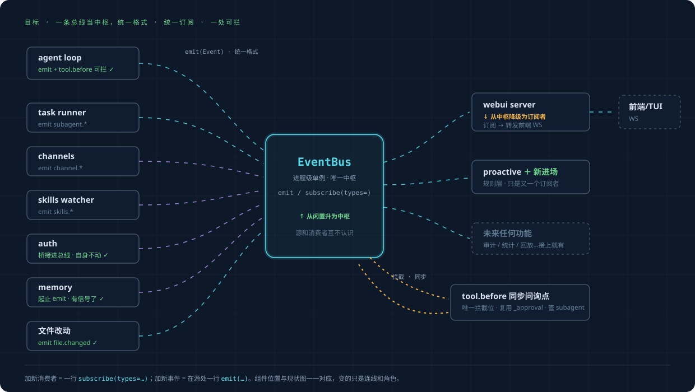

从「各自为政」
到「一条总线当中枢」。
有了事件层之后，框架怎么调整：现状什么样、目标什么样、每个子系统怎么变、按什么顺序迁过去。不大爆炸重写——新旧并行，逐源切换。
从闲置死码升为唯一中枢：进程级单例、统一 Event、按类型订阅
从被迫的信号中枢降为普通订阅者：订阅总线 → 转发前端 WS
只是又一个订阅者。一行 subscribe(types=…) 接入，审计 / 统计 / 回放同理
现状：webui 被迫当信号中枢
几乎所有信号存在的目的都是"让前端看到"，所以全部硬连到 webui 的 _broadcast——五种线型就是五套互不相同的机制。auth 做对了但没人听；memory 和文件改动干脆无信号；hooks 能看不能拦；EventBus 在角落落灰。想加一个新消费者，得分别对接五六套机制，有的时机根本没信号可接。

目标：一条总线当中枢
组件位置与现状图一一对应，变的只是连线和角色。所有源统一 emit(Event)，所有消费者统一 subscribe(types=…)；全框架唯一的拦截位是 tool.before 同步问询点（复用现有批准机制，对 subagent 生效），其余一切都是异步观察。

各子系统怎么变
| 子系统 | 现在 | 将来 | 改动量 |
|---|---|---|---|
| EventBus | 闲置，零订阅 | 升级（类型订阅 + 进程级单例）并启用 | 核心 |
| agent loop | AgentEvent 内部流；hooks 返回值被丢 | 关键节点同时 emit 总线；tool.before 加同步问询（可拦了） | 小 |
| webui server | 被所有人直连，事实上的中枢 | 订阅总线转发前端；旧直连逐源退役 | 中 |
| task runner | 直连 _broadcast job_status | emit subagent.*，广播由 webui 订阅转发 | 小 |
| dispatcher | on_event 回调链直达 webui | 保留（过渡期），另 emit user.prompt_submitted 等 | 小 |
| channels | broadcast_channel_turn 直连 | emit channel.*；直连保留过渡 | 小 |
| auth | 自己的 _emit/subscribe（已经做对了） | 自身不动，一段桥接翻译进总线 | 极小 |
| context | on_event 回调 | 回调里顺手 emit context.* | 极小 |
| memory | 定时 poll，无信号 | 处理起止 emit，"定时"包装成事件 | 极小 |
| 文件改动 | 默默备份，无信号 | checkpoint_before_edit 处 emit file.changed | 极小 |
| plugin hooks | observe-only，6 个 fire 点 | 内部统一走总线；hooks 保留为插件 API 或逐步退役 | 决策点 |
怎么迁：新旧并行，逐源切换
前三步全是加法——总线并行于现有路径跑，零行为变化，随时可停可退。只有第四步动旧路径，且有影子比对兜底。
升级 EventBus（类型订阅 + 单例），agent loop / task runner / dispatcher 在关键节点并行 emit。旧路径原样跑。
file.changed 事件（挂 checkpoint_before_edit）；tool.before 同步问询点（复用 _approval，对 subagent 生效）。
auth / context / channels / memory 各一段单向桥，翻译成统一 Event 进总线。源头逻辑不动。
先影子模式：总线转发与旧直连并行，比对输出一致；确认后逐源切断旧直连。对前端透明。
proactive 规则层接入——从此任何新功能只面对总线，一行 subscribe 接入。
刻意不动的东西
动什么和不动什么一样重要。以下不在本次演进范围：
openprogram/events/{registry,bus,bridges}.py 与各实际 emit 点